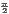
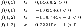

E 6.4.1. Use as mesmas técnicas usadas o resultado do Exemplo (6.4.2) para obter uma aproximação do valor de:
|
|
através do polinômio interpolador que coincide com f(x) nos pontos x = 0 e x = 1.
Resposta. ∫ 01P(x)dx = ,  max x∈[0,1]|f′′(x)| ♢